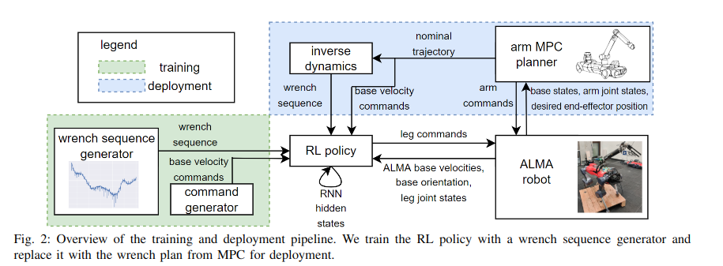
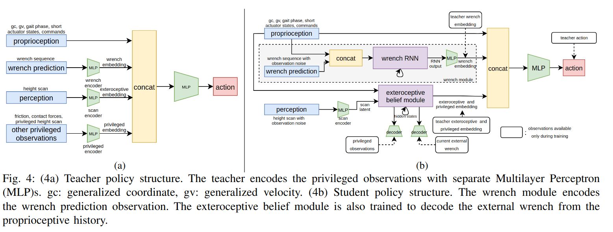
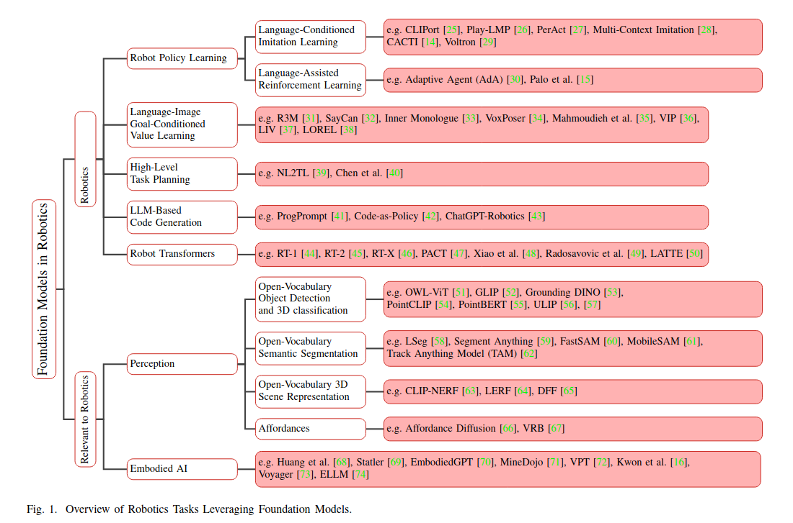

[6] 3mins papers
paper
3mins
Combining Legged and Manipulator/ Foundation Model / / /
Combining Learning-based Locomotion Policy with Model-based Manipulation for Legged Mobile Manipulators
3줄요약
- MPC를 사용하는 매니퓰레이터와 RL을 사용하는 4족로봇의 통합
- 매니퓰레이터가 움직이면, 4족로봇은 그 외란을 예측해서 로봇이 균형을 유지하고 안정적으로 이동할 수 있게 함.
- RL은 매니퓰레이터의 동역학 모델을 직접적으로 사용하지 않음. 시뮬레이션에서 외란을 가해준다음에 MSE를 통해 예측모델을 만드는것임.
Training in Simulation
- 로봇은 시뮬레이션 환경에서 무작위 힘의 조합인 wrench sequence를 적용받음. 학습과정에서 이 렌치 시퀀스 예측을 수행함.
- 학습중에는 별도의 매니퓰레이터 제어기가 필요하지 않음. legged gym에서 push robot과 같은 함수를 지속적으로 가해주는것과 동일함.
Results
- 매니퓰레이터의 다양한 동작과 무게 변화에 대한 적응성이 생김.
- 제어 시스템을 4족로봇, 매니퓰레이터 컨트롤러 두개의 모듈로 분리하여 각 모듈의 독립적인 개발 및 최적화를 가능하게 함.
- 분명 이전에 이거랑 같은 컨셉인 시뮬레이션 논문이 아카이브에 올라왔었는데 지금은 못찾겠음. 확실히 직관적인 아이디어여도 실제 하드웨어로 실험을 해야 논문이 되는것같다.
- Paper Link
 
Foundation Models in Robotics: Applications, Challenges, and the Future
- 강화학습 + MPC 주제쪽으로 보고 있지만 이번에는 관심을 가지고 있는 Foundation model에 대해서 가지고 와봤다. 본 논문은 Foundation model이 로보틱스에서 어떤식으로 활용되어 왔고, 어떻게 연구가 될지에 대해서 논의하는 논문이다. Foundation model을 통해 로봇의 인지, 의사결정, 제어의 능력을 향상시키는 방법을 분석한다.
- 특히, 기초 모델을 활용한 로봇 정책 학습과 강화학습의 접점으로 Language-Assisted Reinforcement Learning (LLM 기반 보상 학습 및 탐색), Vision-Language Value Learning (VLM을 활용한 Value Function 학습), Robotics Transformers (Transformer 기반 행동 정책 학습) 등이 제시되었으며, 이는 강화학습 기반의 제어기 설계에 유용할 수 있다.
- 다만, 실시간 응답 속도 문제, 데이터 부족, 불확실성 정량화 부족 등의 한계가 존재하며, RL과 MPC를 결합한 제어기 학습을 위한 foundation model의 직접적인 적용 사례는 부족하다. 향후 연구 방향으로 RL과 결합 가능한 경량화된 foundation model 개발 및 로봇 제어 특화된 데이터셋 구축이 필요할 것으로 보인다.
- Paper Link
- Youtube
